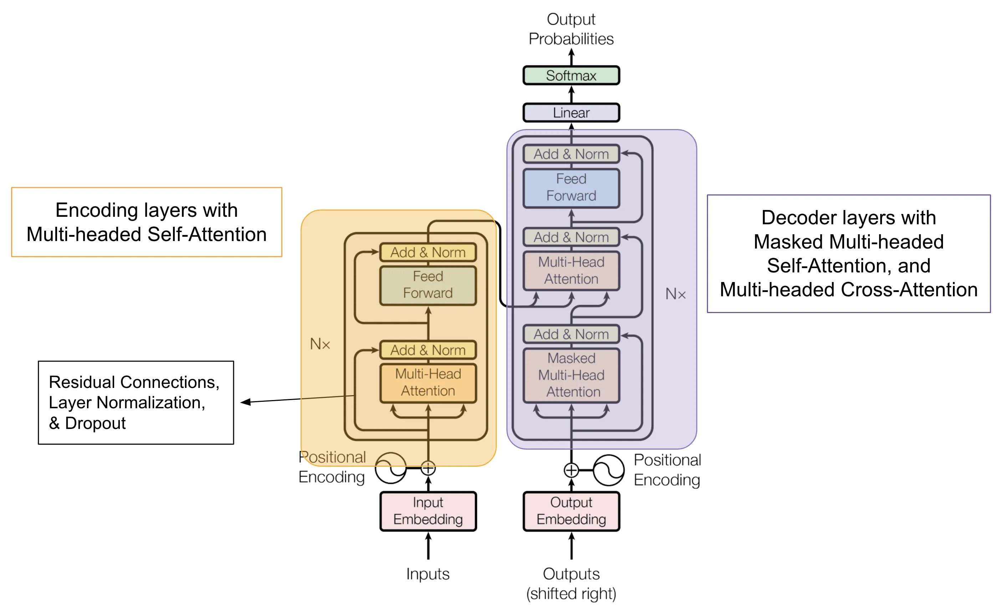
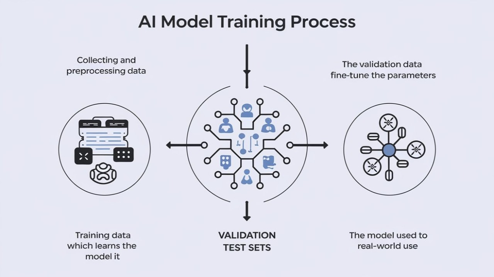

Understanding Modern AI Systems
Artificial intelligence systems like ChatGPT and Claude can engage in conversations, solve problems, and generate content. However, their underlying mechanisms are fundamentally different from human cognition.
These systems operate as sophisticated pattern recognition and prediction engines. While they can produce human-like responses, they function by identifying statistical patterns in data rather than developing conceptual understanding.
 AI neural networks are inspired by brain structure but operate through different mechanisms
AI neural networks are inspired by brain structure but operate through different mechanisms
Key Question: How do statistical pattern-matching systems produce seemingly intelligent behavior?
Core Architecture: Prediction Systems
Modern AI systems solve a fundamental prediction problem: given an input, determine the most statistically likely output. This applies whether predicting the next word in text, pixels in an image, or moves in a game.
Transformer Architecture
Current large language models like GPT-4 and Claude use transformer architecture:
# Simplified transformer process
def transformer_prediction(input_text):
tokens = tokenize(input_text) # Convert text to processable units
embeddings = convert_to_vectors(tokens) # Map to numerical representations
for layer in neural_layers:
embeddings = attention_mechanism(embeddings) # Identify relationships
embeddings = feed_forward(embeddings) # Process patterns
return predict_next_token(embeddings) # Generate most likely continuation Transformer architecture with attention and processing layers
Modern systems operate at significant scale. GPT-3 contains 175 billion parameters trained on 45TB of text data. GPT-4 is estimated to exceed 1 trillion parameters with correspondingly higher computational requirements.
Attention Mechanisms
The attention mechanism enables models to focus selectively on different input elements when making predictions.
Example: “The cat sat on the mat because it was comfortable.”
When determining what “it” refers to, the attention mechanism assigns weights: - “cat” (high attention - 0.7) - “mat” (medium attention - 0.2) - “sat” (low attention - 0.1)
This mechanism allows processing of relationships between distant elements in sequences.
Training Process
AI system development occurs through structured training phases that determine capabilities and limitations.
 Complete pipeline from data collection to deployed system
Phase 1: Pre-training
Systems learn from large text datasets through next-token prediction:
- Data Collection: Process text from websites, books, and articles
- Tokenization: Convert text to discrete units for processing
- Prediction Training: Train models to predict missing tokens in sequences
- Parameter Adjustment: Iteratively modify billions of parameters based on prediction accuracy
# Simplified training loop
for epoch in range(many_epochs):
for text_chunk in massive_dataset:
input_tokens = text_chunk[:-1] # Input sequence
target_token = text_chunk[-1] # Target prediction
prediction = model(input_tokens)
loss = calculate_error(prediction, target_token)
# Update model parameters
model.update_weights(loss.gradient())Phase 2: Fine-tuning
Pre-trained models are refined for specific applications:
- Supervised Fine-tuning: Training on curated question-answer pairs
- Reinforcement Learning from Human Feedback (RLHF): Using human preferences to shape responses
- Safety Training: Implementing guidelines to avoid harmful outputs
This process transforms basic text predictors into conversational assistants.
Emergent Capabilities
Large-scale training produces capabilities that weren’t explicitly programmed. These emergent abilities arise from complex interactions between simple components.
Examples of Emergence
As model size increases, new capabilities develop:
Chain-of-Thought Reasoning: Models develop step-by-step problem-solving approaches without explicit training on this strategy.
In-Context Learning: Systems can perform new tasks based on examples in prompts without additional training.
# Example of in-context learning
prompt = """
Translate English to French:
Hello → Bonjour
Goodbye → Au revoir
Thank you → Merci
Good morning →
"""
# Model produces "Bonjour" despite no explicit
# training on this translation taskCross-Lingual Transfer: Models trained primarily on English can operate effectively in other languages.
The mechanisms underlying emergence remain an active research area, with theories including phase transitions, increased representational capacity, and pattern recognition thresholds.
System Limitations
Current AI systems have several fundamental constraints that stem from their statistical architecture:
Overview of AI system capabilities and constraints
Pattern Matching vs. Understanding
AI systems process statistical relationships in symbols rather than developing conceptual understanding. They can accurately reproduce information without grasping underlying mechanisms.
Example: A system can state that “water boils at 100°C” without understanding molecular behavior, phase transitions, or the physical processes involved.
Output Generation Under Uncertainty
Systems are designed to produce responses even when lacking relevant information, leading to plausible but potentially inaccurate outputs.
# Simplified response generation
def generate_response(query):
if confidence_score > threshold:
return retrieve_known_information(query)
else:
# System still generates output
return generate_plausible_response(query)Training Data Constraints
Models are limited by their training data cutoff and cannot incorporate new information without retraining.
Memory Limitations
Current systems can process limited context windows (typically 4,000-128,000 tokens) with no persistent memory between conversations.
Correlation vs. Causation
Systems excel at identifying statistical correlations but have limited understanding of causal relationships. They may recognize that umbrella sales correlate with rain without understanding the causal mechanism.
Practical Implications
Understanding AI architecture has important implications for effective use:
System Strengths
- Pattern recognition and text generation capabilities
- Rapid processing of large information sets
- Accessible interface for complex tasks
- Consistent performance within training domains
Appropriate Applications
- Content drafting and editing
- Information synthesis from known sources
- Code generation and debugging assistance
- Language translation
- Creative brainstorming
Best Practices
- Verify Important Information: Fact-check outputs for critical applications
- Understand Limitations: Recognize domain constraints and knowledge cutoffs
- Maintain Human Oversight: Keep humans involved in important decisions
- Recognize Bias: Be aware that systems reflect training data biases
- Use as Tools: Apply systems as analytical instruments rather than authoritative sources
Future Development
Current AI systems represent early implementations of statistical learning approaches. Several research directions may expand capabilities:
Near-Term Developments (1-3 years)
- Multimodal systems integrating text, images, audio, and video
- Extended context windows for longer conversations and documents
- Improved reasoning and problem-solving capabilities
- Specialized models optimized for specific domains
Long-Term Research Areas (10+ years)
- Artificial General Intelligence research
- Questions about machine consciousness and subjective experience
- AI alignment and safety considerations
Active Research Questions
Researchers are investigating fundamental questions:
- Scaling Laws: Relationships between model size, data, and capabilities
- Emergence Mechanisms: Why new abilities appear at certain scales
- Alignment: Ensuring AI systems operate according to intended objectives
- Interpretability: Understanding internal model representations and processes
Summary
Modern AI systems represent sophisticated statistical engines that process patterns in data to generate human-like outputs. While they demonstrate impressive capabilities, they operate through pattern matching rather than conceptual understanding.
Key Technical Points
Current AI systems achieve intelligent-seeming behavior through statistical pattern processing rather than understanding. This approach has several implications:
- For Users: Understanding system strengths and limitations enables more effective application
- For Organizations: Appropriate use requires human oversight and verification processes
- For Society: New frameworks are needed for evaluating machine capabilities and limitations
Statistical pattern matching at scale produces sophisticated behavior, suggesting that aspects of intelligence may be more computational than previously understood.
As these systems become more prevalent, understanding their statistical nature becomes increasingly important for effective implementation. The technology continues evolving rapidly, with ongoing research addressing questions about scaling, emergence, and alignment with human objectives.
The field represents significant progress in automated pattern recognition and generation, with continued development likely to expand capabilities while maintaining the fundamental statistical architecture.
Understanding the technical foundations of AI systems helps inform appropriate use and realistic expectations about current capabilities.